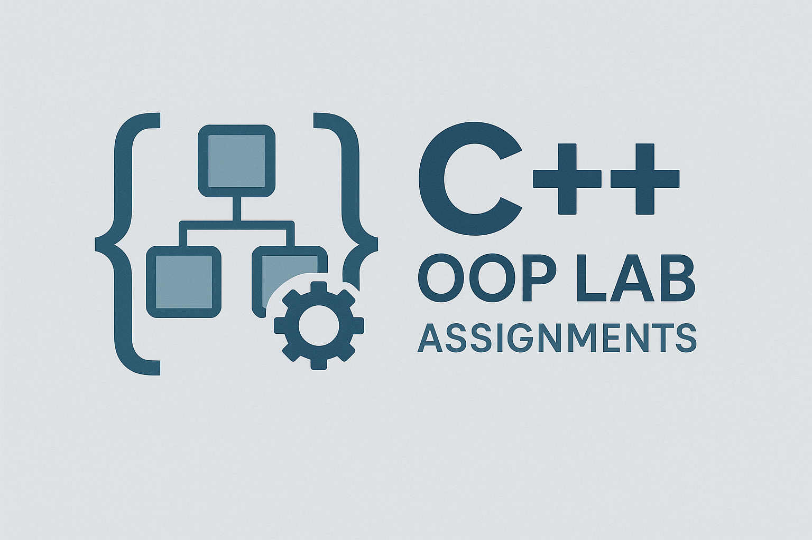
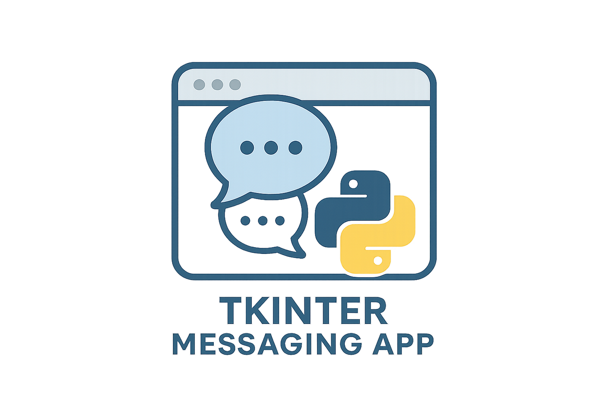

Work
Here are some projects in which i have worked with :

C++ Complete Tutorial Series
This comprehensive C++ tutorial series covers all essential topics, from beginner to advanced
concepts.
Starting with the basics of C++ syntax and foundational programming concepts, it dives into
advanced
data structures, complex string manipulation, and sorting algorithms. The tutorials also explore
Object-Oriented Programming (OOP) principles, complete with classes, inheritance, and
polymorphism,
along with a detailed breakdown of the Standard Template Library (STL) for efficient data
handling.
Ideal for beginners and those looking to solidify their skills in C++, this series provides a
structured
approach to mastering the language.

C++ OOP Lab Assignments
This project consists of Object-Oriented Programming (OOP) lab assignments that were part of the semester
coursework. Solved in C++, these assignments cover key OOP principles such as classes, inheritance,
polymorphism, encapsulation, and abstraction. Each assignment provides hands-on practice in applying
OOP concepts to real-world scenarios, helping to strengthen understanding and mastery of object-oriented
programming in C++.

C++ Data Structures and Lab Assignments
This project is a focused subset of the comprehensive C++ course, specifically dedicated to data
structures. It includes practical lab assignments to help solidify understanding of core data
structures
in C++, such as arrays, linked lists, stacks, queues, trees, and graphs. Each tutorial is
accompanied
by assignments to provide hands-on experience, guiding learners through the implementation of
these
structures and algorithms in C++.
MATLAB Tutorials with Semester Assignments
This MATLAB tutorial series covers a range of essential numerical methods and assignments taught in the
semester course. Topics include the Bisection Method, Newton-Raphson Method, Lagrange Interpolation,
Fixed Point Iteration, Newton's Divided Difference Method, Composite Trapezoidal and Simpson's Rule,
Gauss-Seidel Method, Eigenvalues and Eigenvectors, and Curve Fitting. Designed to reinforce theoretical
concepts with practical applications, these tutorials help students gain hands-on experience in MATLAB
for solving real-world computational problems.

Operating System Scheduling and Algorithms
This project covers essential Operating System concepts and algorithms, focusing on scheduling techniques
taught in the third semester. Topics include core scheduling algorithms such as First-Come First-Serve (FCFS),
Shortest Job First (SJF), Shortest Remaining Time First (SRTF), Round Robin (RR), Priority, and Feedback.
Additionally, it includes classic algorithms like Producer-Consumer and Printer Spooling, providing practical
insights into synchronization and process scheduling.

Complete Pandas, Matplotlib, Seaborn Tutorial Series with Projects
This comprehensive tutorial series covers the core concepts of Pandas, Matplotlib, and Seaborn, with a focus
on data analysis, visualization, and real-world project implementation. Topics include data manipulation
with Pandas, data visualization with Matplotlib and Seaborn, and exploring datasets for insights. In addition
to the theoretical content, this series includes several projects that use real-world datasets to solve
practical problems, helping learners apply their skills to real-life scenarios. Ideal for data science
enthusiasts looking to improve their data manipulation and visualization abilities.
Complete NumPy Tutorial Series
This project offers a comprehensive tutorial series on NumPy, covering everything from basic array
operations to advanced topics like broadcasting, vectorization, and linear algebra. With practical
examples and hands-on exercises, this series is designed to help learners develop a deep understanding
of NumPy's core functionality, including array manipulations, indexing, slicing, reshaping, and mathematical
operations on arrays. Ideal for beginners and those looking to refine their NumPy skills.

Python OOP Tutorial Series
This Python tutorial series focuses on Object-Oriented Programming (OOP) concepts, covering topics such as
classes, objects, inheritance, polymorphism, encapsulation, and abstraction. Each lesson provides practical
examples and exercises to help learners master the fundamentals of OOP in Python, as well as more advanced
features like decorators, class methods, and static methods. Ideal for beginners who want to dive deep into
Python’s OOP paradigm and gain hands-on experience with object-oriented principles.
Instagram Prototype
This project is a prototype of an Instagram-like application developed using Python's Tkinter
module, featuring core functionalities such as user registration, login, post management, and
more.
Users can register with a unique username, secure password, and valid email address, and
securely
log in to access their accounts. The application includes a navigation bar for quick access to
essential features like Home, Profile, and Add Post. Users can create, update, and delete posts,
like and unlike posts, and comment on them. They can also view posts from specific users and
update
their account details, though email and username changes are restricted. Password recovery is
currently insecure, requiring only a username. Future enhancements include implementing input
validation, enabling comment deletion, improving the user interface, and adding stronger
security
measures. For installation, clone the repository, convert the script to an executable file using
PyInstaller, and follow the usage instructions to register, log in, and explore the features of
the
application.
Shopping Management System
The Shopping Management System is a versatile e-commerce application designed to streamline the
online shopping experience with its robust CRUD (Create, Read, Update, Delete) functionality. It
offers two specialized interfaces: one for vendors and one for customers. The vendor interface
empowers sellers to efficiently manage their inventory by adding new products, viewing existing
ones, updating details such as images and prices, and deleting outdated or unnecessary items. On
the
customer side, the application provides a user-friendly experience with features to search for
products, add items to a cart or wishlist, and manage both. Customers can view and modify their
cart, place orders—removing items from the cart upon purchase—and view their order history.
Wishlist
items remain until explicitly deleted, providing flexibility in managing desired products.
Despite
its functional capabilities, the system's code may appear somewhat disorganized and repetitive,
reflecting a focus on achieving functional results rather than optimizing code structure.
Parking Management System
The 'Parking Management System' is a sophisticated software solution designed to revolutionize
parking operations. Developed using Python's Tkinter library for GUI and integrated with a MySQL
database, this system offers a seamless and efficient way to manage parking facilities. Users
can
effortlessly book parking slots, process payments securely, and register their vehicles for an
enhanced parking experience. With features like advanced booking, integrated payment gateways,
and
user-friendly interfaces, the system ensures convenience and ease of use. Automatic email
notifications provide users with essential booking details and payment receipts, while advanced
security measures, including digital keys and real-time surveillance, ensure vehicle safety.
Built
with scalability in mind, the system can be customized and expanded to meet evolving client
needs,
making it a versatile solution for parking management.
Resturant Management System
This restaurant management system, developed using Tkinter, encompasses key functionalities such
as
order processing and room reservation management for existing guests in the database. Although
there
is potential to incorporate additional features such as integrating room details and menus into
the
database, the primary emphasis has been on maintaining the entirety of the project within a
single
file and managing code length, which exceeds 700 lines. Consequently, while the DRY (Don't
Repeat
Yourself) principle hasn't been fully adhered to, and the code predominantly follows a
procedural
paradigm. It is presumed that the requisite databases and tables have been pre-established for
the
program's operation.

library Management System
This Library Management System, developed using Python's Tkinter library, provides a
comprehensive
interface for managing a library's book inventory and user interactions. It includes features
such
as adding new books, issuing books to members, editing book details, returning issued books,
deleting books from the inventory, displaying the list of all books, and searching for specific
books in the database. Additionally, the application offers a logout functionality to securely
exit
the system. Each feature is accessible through clearly labeled buttons on the main interface,
ensuring ease of use for library staff.
Desktop assistant
It performs various tasks through voice commands, including opening applications, browsing the
web,
sending emails, controlling media playback, and providing system information. The program
supports
44 commands, making it useful for tasks like shutdown, sleep, adjusting brightness and volume,
and
searching and playing YouTube videos. It employs the speech_recognition library for voice
recognition, the pyttsx3 library for text-to-speech, and features a Tkinter-based GUI for user
interaction. While currently limited in scope, It is an excellent project for beginners and can
be
enhanced with additional APIs like OpenAI.

Banking management system
This is a simple banking system implemented in Python using the Tkinter module. It provides a
user-friendly interface for registering, logging in, depositing, and making payments. This
project
serves as a foundational requirement for future projects that involve payment options, such as
restaurant management systems, parking management systems, etc.

Tkinter Messaging App
The Tkinter Messaging App is a straightforward messaging platform created using Tkinter, a
Python
GUI toolkit. It facilitates user communication through features like registration, login, and
real-time chatting among registered users. New users can register by providing their email,
password, and username, with email serving as the primary identification key. Once logged in,
users
can access their contacts and engage in real-time conversations, with chat history being loaded
if
available. The application's design is simple and intuitive, ensuring easy navigation and usage.
It's worth noting that while the app provides basic messaging functionality, it may lack
advanced
features commonly found in comprehensive messaging applications.

Hospital management system
This hospital management system, developed using Tkinter, encompasses key functionalities such
as
appointment taking, granting and prescribing for existing patients in the database. Although
there
is potential to incorporate additional features such as integrating medical records and
treatment
details into the database, the primary emphasis has been on maintaining the entirety of the
project
within a single file and managing code length, which exceeds 800 lines. Consequently, while the
DRY
(Don't Repeat Yourself) principle hasn't been fully adhered to, and the code predominantly
follows a
procedural paradigm. It is presumed that the requisite databases and tables have been
pre-established for the program's operation.
To-Do-Lists
The Django Todo List project is a web application developed using the Django framework, offering
a
simple yet effective way to manage tasks and to-dos. Users can create, update, and delete tasks,
as
well as mark them as complete. The application typically includes features like user
authentication
and authorization to ensure task privacy and security. With Django's powerful features and
easy-to-use admin interface, building a Todo List becomes efficient and customizable to fit
various
needs.

others
Various projects are available in the GitHub repository, covering a wide range of
functionalities
and tools. These projects include a Student Registration System using Tkinter and Openpyxl
modules,
enabling seamless management of student data. Additionally, an Online Audio Video Downloader
facilitates easy retrieval of multimedia content from online sources. For entertainment and
decision-making purposes, a Toss Simulator and Dice Simulator, built using Python Tkinter
module,
provide interactive experiences. Furthermore, a Hydration Tracking System ensures users stay
hydrated by monitoring their water intake. Lastly, a Patients Registration System implemented in
C
offers a comprehensive solution for managing patient records efficiently. These projects
showcase
diverse applications of programming languages and modules, catering to different needs and
interests.